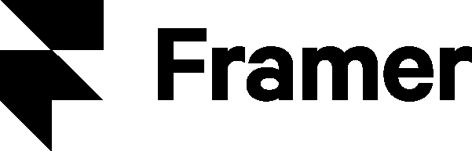
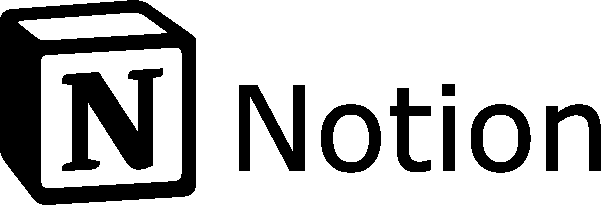
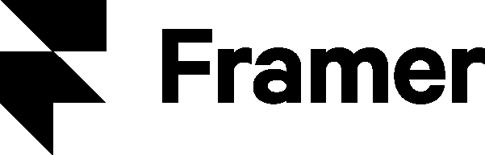
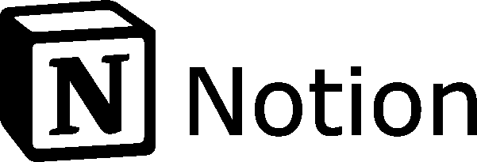
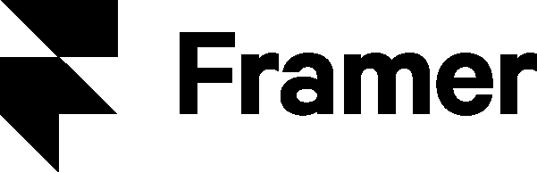
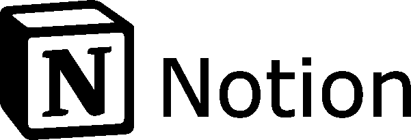

Une exploration


Explorez un univers visuel où l'imagination prend vie. Plongez dans l'art du design graphique, où chaque pixel dévoile une histoire unique.


 





Explorez un univers visuel où l'imagination prend vie. Plongez dans l'art du design graphique, où chaque pixel dévoile une histoire unique.

